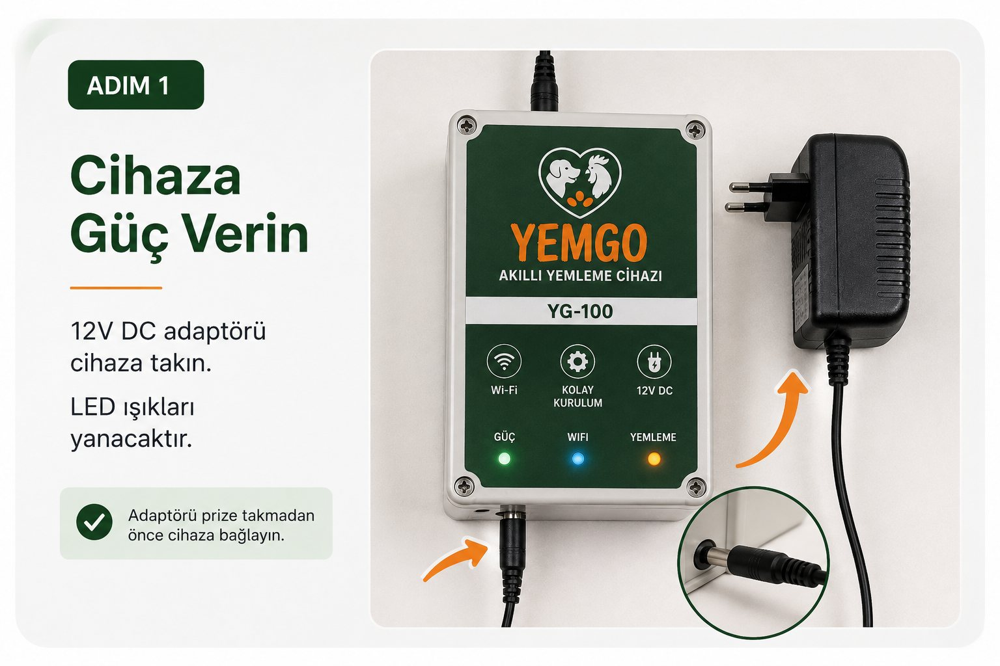
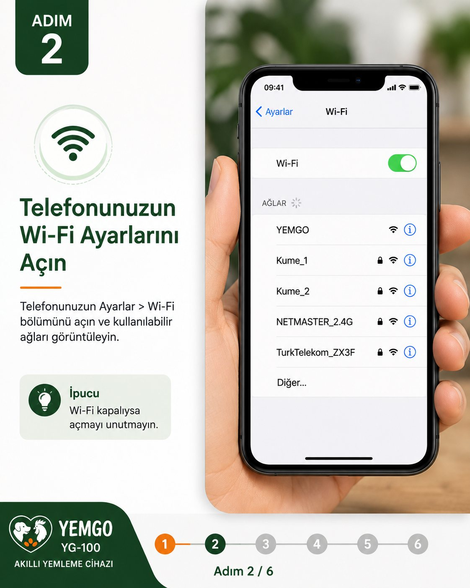
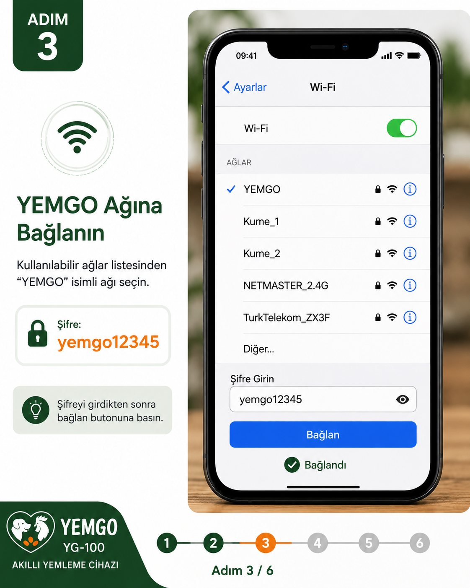
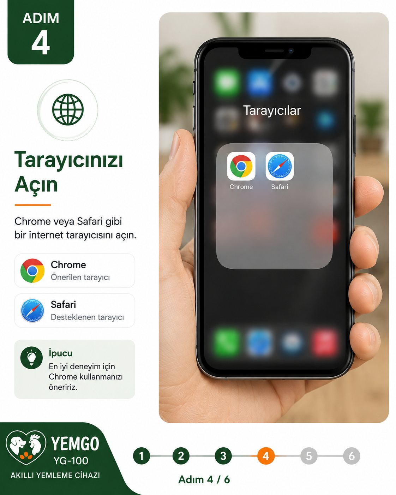
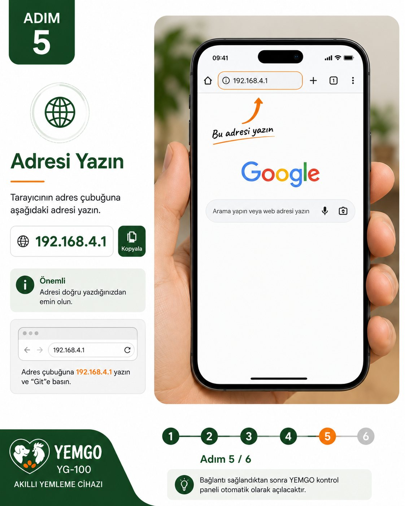
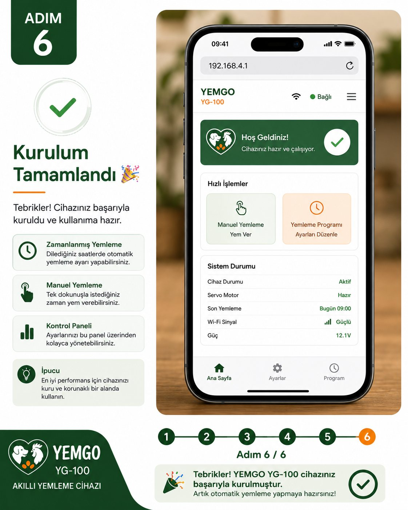

1

Cihaza Güç Verin
Adaptörün ucunu önce cihaza takın, sonra prize takın. Cihazdaki ışık yanarsa her şey yolunda demektir.
Kurulum yaklaşık 2 dakika sürer.
Hazırsanız başlayalım.
Teknik bilgi gerekmez. Önce kısa videoyu izleyin, ardından adımları sırayla takip edin. Acele etmeyin, istediğiniz an geri dönebilirsiniz.
Videoda tüm kurulum baştan sona gösteriliyor. Takıldığınız yere aşağıdaki butonlarla hemen atlayabilirsiniz.
Önemli: YEMGO ağına bağlanınca telefonunuz internetten kopar. Videoyu bağlanmadan önce izleyin veya indirip kaydedin.
Videoyu İndirVideoyu izlemek istemeyenler için aynı kurulum, resimlerle.

Adaptörün ucunu önce cihaza takın, sonra prize takın. Cihazdaki ışık yanarsa her şey yolunda demektir.

Telefonunuzda Ayarlar'a girin ve Wi-Fi'a dokunun.

Listeden YEMGO ağını seçin ve aşağıdaki şifreyi girin. Kopyala butonu işinizi kolaylaştırır.
yemgo12345

İnternet gezgininizi açın: Chrome (Android) veya Safari (iPhone).

Üstteki adres çubuğuna aşağıdaki numarayı yazın ve git'e basın. Kopyala butonunu da kullanabilirsiniz.
192.168.4.1
Sayfa açılmazsa: telefonunuzun mobil verisini kapatın, yalnızca YEMGO ağına bağlı kalın ve adresi tekrar deneyin.

Açılan sayfada istediğiniz yemleme saatlerini seçin ve Kaydet'e basın. Bu kadar! İsterseniz tek dokunuşla manuel yemleme de yapabilirsiniz.
Basit ama güçlü. Tarlada, kümeste, bahçede — her yerde çalışır.
Telefon üzerinden kolay kontrol.
İstediğiniz saatlerde otomatik yemleme.
Tek dokunuşla yem verin.
Düşük enerji tüketimi.
Kurulum yaklaşık 2 dakika sürer.
Telefon doğrudan cihaza bağlanır.
Uzun ömürlü kullanım.
Yerel üretim.
Yemi kuru tutun.
Cihazı yağmurdan koruyun.
Adaptörü su ile temas ettirmeyin.
Belirli aralıklarla temizleyin.
Cihazın LED ışığının yandığından emin olun. Telefonunuzun Wi-Fi listesini yenileyin ve 30 saniye bekleyin. Sorun devam ederse cihazı fişten çekip tekrar takın.
Telefonunuzun mobil verisini (4G/5G) kapatın, yalnızca YEMGO ağına bağlı olduğunuzdan emin olun. Ardından adresi tekrar yazıp deneyin.
Şifreyi büyük/küçük harf duyarlılığına dikkat ederek yazın: yemgo12345. Kopyala butonunu kullanmanızı öneririz.
Cihazın gücünü kesip 10 saniye sonra tekrar takın. Yem haznesinde sıkışma olup olmadığını kontrol edin.
Yem haznesinde yeterli yem olduğundan emin olun. Yem nemli veya topaklanmış olabilir; kuru yem kullanın ve hazneyi temizleyin.
Cihaz üzerindeki reset düğmesine 5 saniye basılı tutun. LED ışığı yanıp söndüğünde cihaz fabrika ayarlarına dönmüştür.